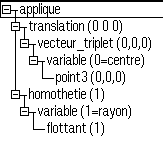
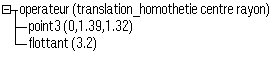

Elles permettent de définir des fonctions.
Ces deux classes sont des classes comme les autres.
|  |
La variable permet de définir les paramètres de la fonction «translation_homothétie» |
|  |
L'opérateur permet d'appeler une fonction en spécifiant ses paramètres. |